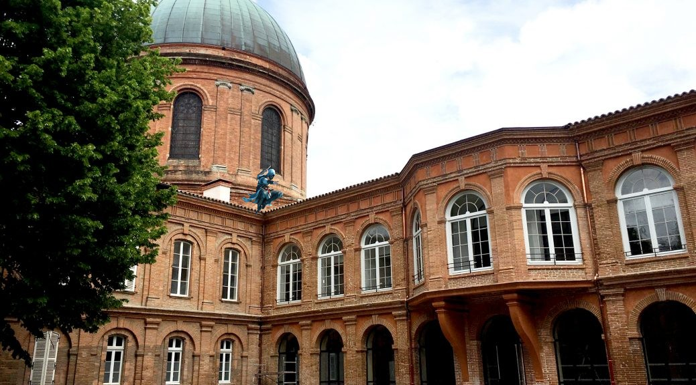

Après avoir parcouru la toscane avec Ezio Auditore de Firenze, après avoir diner au Valhalla, avec Eivor Varinson, après être devenu le roi des pirates avec Edward Kenway et même parfois être devenu un templier avec Shay Patrick Cormac.
Etant de Toulouse, nous pouvons facilement imaginer le nouveau protagoniste se balader assez aisément dans les vieux batîments.

Les assassins ont pour prochaine destination l'Europe, ce nouveau Assassin's Creed se rapprochent plus que jamais du cinéma avec une double sortie, deux jeux sortant en même temps, les deux histoires s'entre-mêlant narrativement afin de créer des émotions plus fortes que jamais.

Un dès prédateur emblématique de la région Occitanie est le faucon, nous pouvons donc facilement l'imaginer comme un emblème de cette équipe.